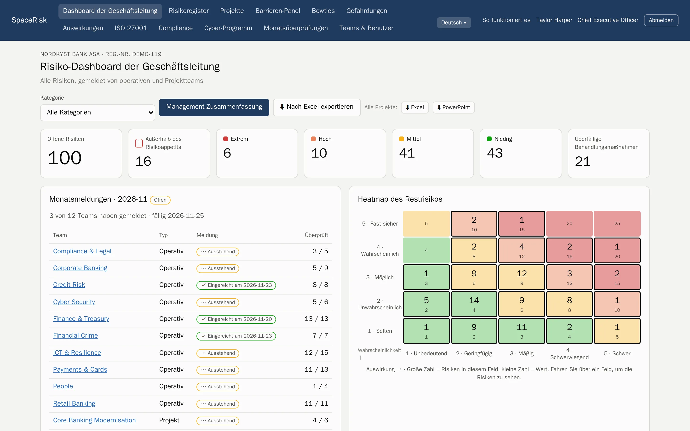
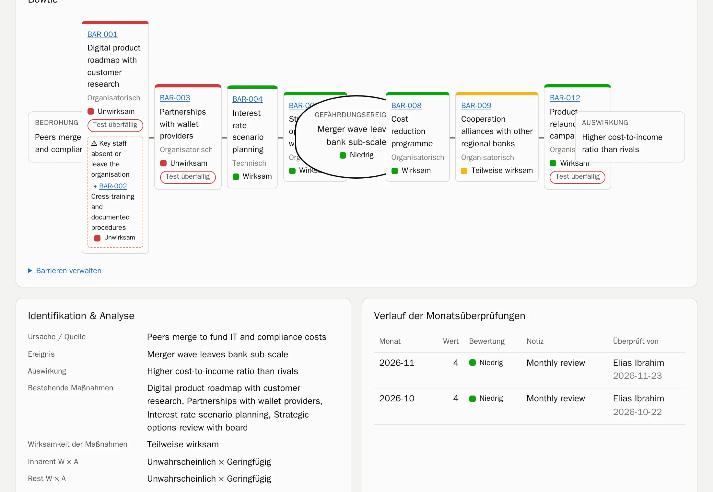
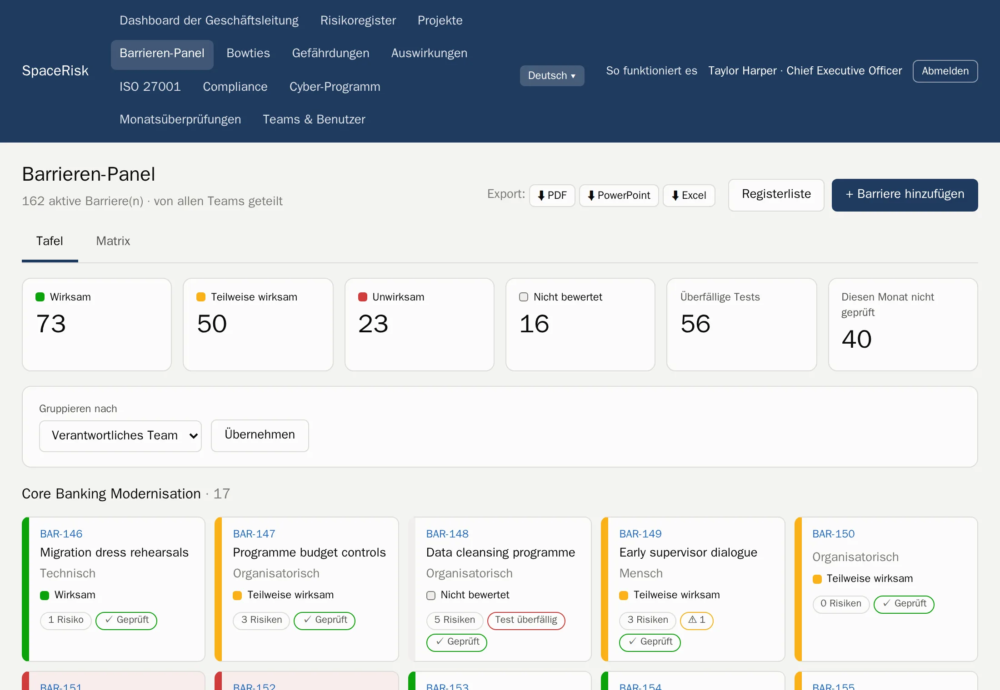
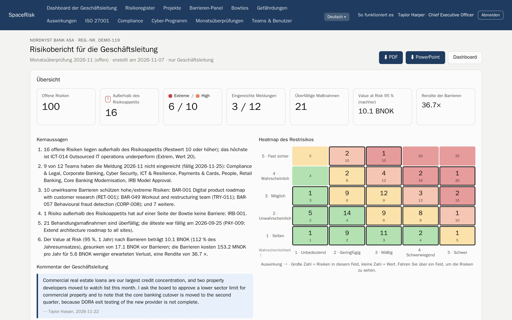
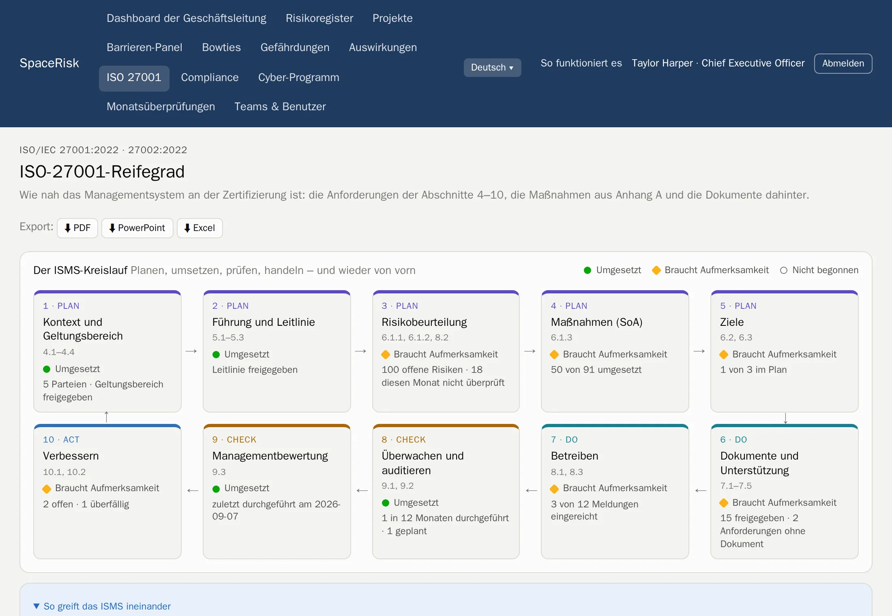
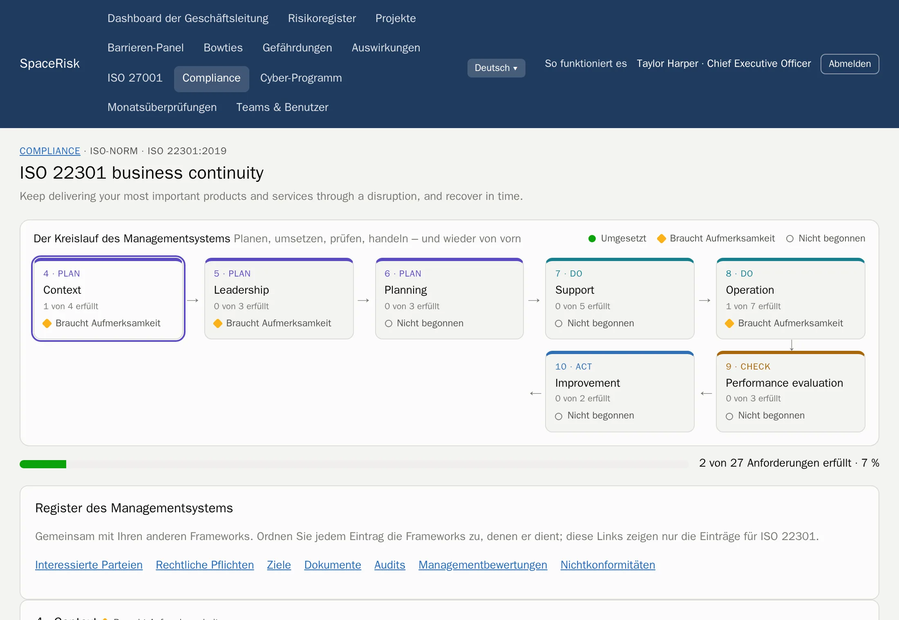
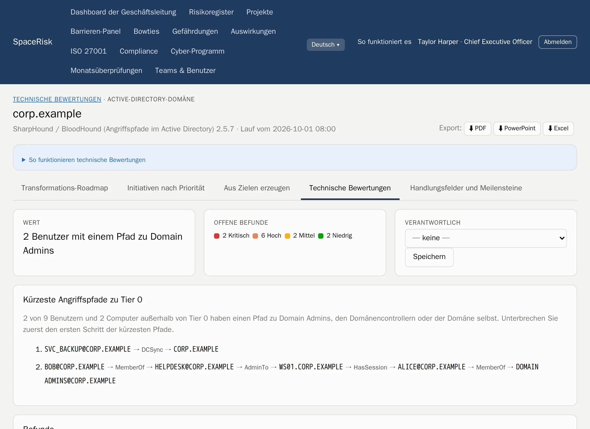
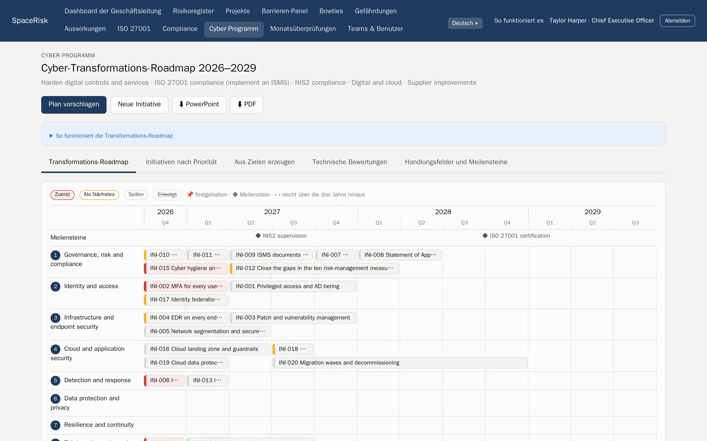

Risikomanagement nach ISO 31000
Jedes Risiko, vom Team bis in den Vorstand.
SpaceRisk macht aus den Risiken, die Ihre Teams kennen, lebendige Bowties, prüft jeden Monat die Barrieren, die sie aufhalten, und zeigt der Geschäftsleitung, was es kosten würde.
Von uns gehostet oder auf Ihren eigenen Servern. Ihre Daten gehören immer Ihnen.

- Banken
- Versicherungen
- Krankenhäuser
- Öl und Gas
- Energie
- Software
- Öffentlicher Sektor
- Logistik
- Bauwesen
- Handel
So funktioniert es
Der ISO-31000-Kreislauf, eingebaut in den Monat.
Kein separates Risikoprojekt, das veraltet. SpaceRisk setzt die Norm als einfachen Monatsrhythmus um, dem jedes Team folgen kann.
- 1
Kriterien festlegen
Eine Skala für Wahrscheinlichkeit und Auswirkung, Ihre Risikobereitschaft und Ihre Kategorien.
- 2
Identifizieren
Teams und Projekte erfassen, was schiefgehen kann – dort, wo sie arbeiten.
- 3
Analysieren und bewerten
Brutto-, Netto- und Zielrisiko, gemessen an der Risikobereitschaft.
- 4
Behandeln
Barrieren und Maßnahmen mit Verantwortlichen und Fristen.
- 5
Überwachen und überprüfen
Jeden Monat prüft jedes Team seine Risiken und Barrieren und reicht seine Meldung ein.
Bowties und Barrieren
Sehen Sie, was zwischen einer Bedrohung und dem Schaden steht.
Jedes Risiko ist ein Bowtie: die Bedrohungen links, die Auswirkungen rechts und die Barrieren dazwischen. Barrieren liegen in einem gemeinsamen Register, so schützt eine Kontrolle viele Risiken, und Sie sehen sofort, wenn eine schwache zu viel trägt.
- Präventive und mindernde Barrieren, mit Wirksamkeit und dem Datum des letzten Tests
- Ein Barrieren-Panel für die ganze Organisation, gruppiert nach verantwortlichem Team oder Typ
- Eskalationsfaktoren und die Barrieren, die die Barrieren schützen


Monatsüberprüfungen
Ein Rhythmus für jedes Team.
Jeden Monat überprüft das Team alle eigenen Risiken und jede Barriere, dann reicht die Teamleitung die Meldung ein. Sie wissen immer, wer auf dem neuesten Stand ist, und der Trend jedes Risikos entsteht von selbst.
- Team- und Projekt-Dashboards mit Heatmap und dem Trend jedes Risikos
- Meldungen lassen sich erst einreichen, wenn jedes Risiko überprüft ist
- Ein Kommentar für jeden Monat und die ganze Historie für die Revision
Für die Geschäftsleitung
Risiko in der Sprache des Vorstands.
SpaceRisk beziffert das Risiko: erwarteter Verlust, ein simulierter Value at Risk vor und nach den Barrieren und die Rendite dessen, was die Barrieren kosten. Die Management-Zusammenfassung formuliert ihre Kernaussagen selbst und ist bereit zur Präsentation.
- VaR 95 %
- simuliert, vor und nach den Barrieren
- 1 Klick
- Management-Zusammenfassung als PDF oder PowerPoint
- Excel
- jedes Register, bereit zur Analyse

Compliance
Zwei Module. Ein Managementsystem.
Nehmen Sie das Modul ISO 27001, das Modul Compliance oder beide. Jedes Rahmenwerk zeigt seinen Kreislauf mit aktuellem Fortschritt und Ihren nächsten Schritten, und alle teilen sich dieselben Register: interessierte Parteien, rechtliche Pflichten, Ziele, Dokumente, Audits, Managementbewertungen, Abweichungen, Vorfälle und Lieferanten.
ISO/IEC 27001 und 27002
Abschnitte 4–10, alle 93 Maßnahmen, eine Erklärung zur Anwendbarkeit, der ISMS-Kreislauf und prüffähige Exporte. Mit dem Cyber-Programm.
ISO 22301 und ISO 45001
Business-Impact-Analyse mit RTO und RPO, Notfallübungen, Beteiligung der Beschäftigten und die Rangfolge der Schutzmaßnahmen.
NIS2 und DORA
Meldefristen für Vorfälle, Lieferantenregister und Informationsregister sowie Resilienztests. Mit den norwegischen Gesetzen.
DSGVO und ISO 27701
Verarbeitungsverzeichnis, DSFA und Anträge betroffener Personen mit ihrer Monatsfrist.
ISO 42001
Ein Verzeichnis der KI-Systeme mit Ihrer Einstufung nach der KI-Verordnung, und KI-Folgenabschätzungen.
Cyber Resilience Act
Produkte mit digitalen Elementen und Schwachstellen, mit den Meldefristen von 24 Stunden, 72 Stunden und 14 Tagen.
- Jede Anforderung zeigt die ISO-27001-Maßnahmen, die dieselbe Arbeit schon abdecken
- Jedes Rahmenwerk wird als PDF, PowerPoint und Excel exportiert und erscheint in der Management-Zusammenfassung
- Überfällige Meldungen an Behörden erscheinen im Dashboard der Geschäftsleitung


Orientierungshilfe, keine Rechtsberatung. Anforderungstexte sind in unseren eigenen Worten formuliert.
Cyber-Programm
Von Sicherheitsbefunden zum Dreijahresplan.
Laden Sie Ergebnisse der Tools hoch, die Ihr Team schon nutzt. SpaceRisk macht aus den Befunden Nachweise für die richtigen ISO-Controls, findet die kürzesten Angriffspfade zu Ihren Domänen-Admins und schlägt ein priorisiertes Programm auf einer Transformationskarte vor, die Sie direkt in den Vorstand bringen können.
- PingCastle
- Prowler
- SharpHound
- Befunde, Trends und Behebungen pro Ziel, über alle Läufe hinweg
- Angriffspfade zu Tier 0 aus Active-Directory-Daten
- Eine bewertete Transformationskarte, exportiert nach PowerPoint und PDF


Agenten und API
Überlassen Sie den Papierkram Ihren Agenten. Entscheiden tun Menschen.
Skripte und KI-Agenten erhalten eigene Tokens und eine dokumentierte REST-API. Sie melden und überprüfen Risiken, prüfen Barrieren und laden Tool-Ergebnisse hoch. Im Vorschlagsmodus wartet jede Änderung im Posteingang, bis ein Mensch sie freigibt.
- OpenAPI-Dokumentation
- Jeder Vorschlag wird geprüft, bevor ihn jemand freigibt
- Agenten-Tokens werden nur als Hash gespeichert
POST /api/v1/risks/ICT-014/review
Authorization: Bearer ••••••••
← 202 wartet im Posteingang auf Freigabe
POST /api/v1/assessments/uploads?tool=pingcastle
Content-Type: application/xml
← 201 Ergebnisse gespeichertBeispielunternehmen
92 Unternehmen zum Erkunden, von Banken bis Krankenhäusern.
Starten Sie in einer Welt, die Sie kennen. Jedes Beispiel ist ein fiktives Unternehmen mit eigenen Teams, Risiken, Barrieren und Historie, in Minuten bereit. Zu jedem gibt es eine Beispiel-Management-Zusammenfassung als PDF.
Gebaut für Vertrauen.
Gehostet oder selbst betrieben
Wir betreiben es für Sie, oder Sie betreiben es auf eigenen Servern, auf Intel oder ARM.
Ihre Daten gehören Ihnen
Exportieren Sie alles als PDF, PowerPoint, Excel oder vollständiges Datenbank-Backup, jederzeit.
Zugriff nach Rolle
Die Geschäftsleitung sieht alles. Teams sehen ihr Eigenes. Geldbeträge bleiben bei der Geschäftsleitung.
Sieben Sprachen
Englisch, Norwegisch, Deutsch, Spanisch, Französisch, Italienisch und Portugiesisch, für jeden Nutzer.
Sehen Sie SpaceRisk mit Ihren eigenen Risiken.
Erzählen Sie uns von Ihrer Organisation, und wir richten ein Beispiel ein, das Ihrem ähnelt.